Vector Display
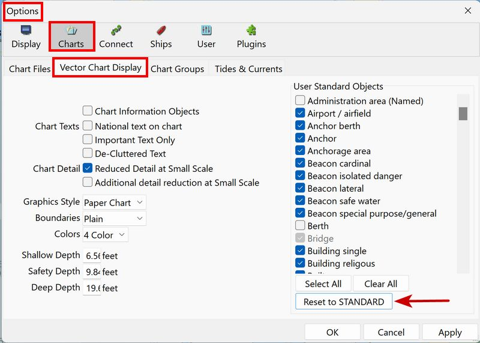
*//[[opencpn:manual_basic:set_options:charts:vector_display#Chart_information_Objects|Chart Information Objects]]// *//[[opencpn:manual_basic:set_options:charts:vector_display#Chart_texts|Chart Texts]]// *//[[opencpn:manual_basic:set_options:charts:vector_display#Chart_detail|Chart Detail]]// *//[[opencpn:manual_basic:set_options:charts:vector_display#graphics_style|Graphics Style]]// *//[[opencpn:manual_basic:set_options:charts:vector_display#boundaries|Boundaries]]// *//[[opencpn:manual_basic:set_options:charts:vector_display#colors|Colors]]// *//[[opencpn:manual_basic:set_options:charts:vector_display#depth_settings|Depth Settings]]// *//[[opencpn:manual_basic:set_options:charts:vector_display#shallow,_Safety,_And_Deep_Depths|Shallow, Safety and Deep Depths]]// *//[[opencpn:manual_basic:set_options:charts:vector_display#user_standard_objects|User Standard Objects]]// *//[[opencpn:manual_basic:set_options:charts:vector_display#Vector Chart Hot Keys|Vector Charts Hot Keys]]//
Additonal Notes
*//[[opencpn:manual_basic:set_options:charts:vector_display#Vector_Palettes|Vector Palettes]]// *//[[opencpn:manual_basic:set_options:charts:vector_display#Practical_Use|Practical Use]]// *//[[opencpn:manual_basic:set_options:charts:vector_display#CM93_Detail_Level|CM93 Detail Level Use]]//
Chart Information Objects
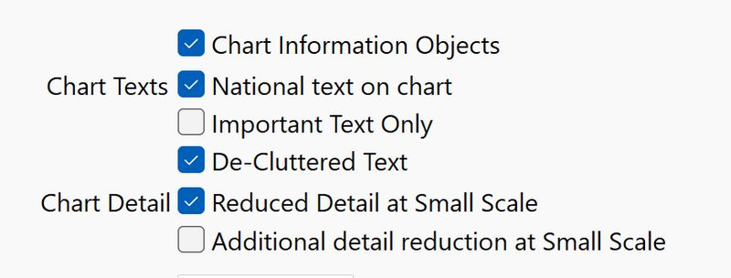
There are many questions about these chart symbols, which provide information about the chart itself. With this switch on, an object query reveals such information as the buoy system for the area, the Quality of the Survey, and the latest NTM update and sources for the chart.
 …
… …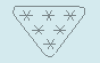
…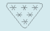
On raster-charts there is often a diagram showing the sources and age of surveys of the charts.
On vector-charts, when activated, symbols are shown all over the screen. An object query of these symbols gives the details. When using "Mariners Standard" and "Chart Information Objects" is ticked, it is possible to get rid of the quality symbols covering the chart by unchecking "Quality of data" (M_QUAL).
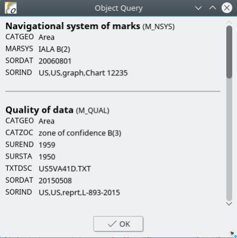
Refer to Chart Panel Options > Vector Display for additional information
Chart Texts
National text on chart
Vector charts may have attributes with text in the national language. For example a Russian chart with text in Cyrillic. With this option activated OpenCPN will display text in the local language and character set, in this case Russian written in Cyrillic.
Important Text Only
Displays only a bare minimum of text essential for navigation, such as course and bearing in a leading line (range) and bridge clearances. Information such as Buoy/Light Labels will not be shown. Names of the objects are not considered important (by the ENC standard) so all names of objects is removed. Don’t tick this option unless you know it’s right for you.
| NOAA ENC Chart users should generally leave this unchecked. If a text element is not specified by the cartographer to be "important", then it is not shown. NOAA typically applies the "Important" tag to very few objects. So for NOAA Vector Charts, checking Important Text Only, results in almost no text. |
De-Cluttered Text
Even when checking Chart Detail "Reduced Detail at Small Scale", there are cases when text labels overlap or overwrite other labels and create a cluttered impression. Ticking this box attempts to clear the view, dropping overlapping text labels in the interest of legibility. The labels that get dropped are the last that would have been drawn, however since there is no built-in priority scheme for text labels in ENC vector charts, this setting may hide needed information.
Chart Detail
Colors
Depth on the chart can be displayed with either 2 or 4 colors. This setting is closely related to the "Depths Settings".
Depth Settings
Units
Units for depths is set in Options > Display > Units. All depths
units are rounded off to the nearest number. If the value is half way
between, the nearest higher number is used. Underlined values indicates
drying heights.
Feet
Only whole digits are shown. A value of 12 feet covers all soundings between 11.5 feet and 12.4 feet.
Shallow, Safety and Deep depths
These user defined contour lines may help to visualize quickly depth information.
A common definition of these contours is: a depth smaller than shallow depth is too shallow to navigate in, simply: there is less water depth than the vessel’s draught. A depth larger than safety depth is considered safe. At depths between shallow depth and safety depth navigation is possible, however not considered safe and thus should be avoided or done only with appropriate caution. If the depth is larger than deep depth the actual depth values do not play any role for navigational purposes any more.
These three settings will affect the presentation of the safety depth contour line, the depth values and colouring of the areas between contours. Here discussed for four color mode.
*The **safety depth contour line** will be bold (see magenta circle on image below). All others will be normal. * depth values larger than the **safety depth** will be in grey, otherwise black.(see magenta circle) * white colour is used for areas deeper than **deep depth**, grey is used between **deep depth** and **safety depth**, light blue is used between **safety depth** and **shallow depth**, and dark blue is used below **shallow depth**. Green is used for areas falling dry at low tide.
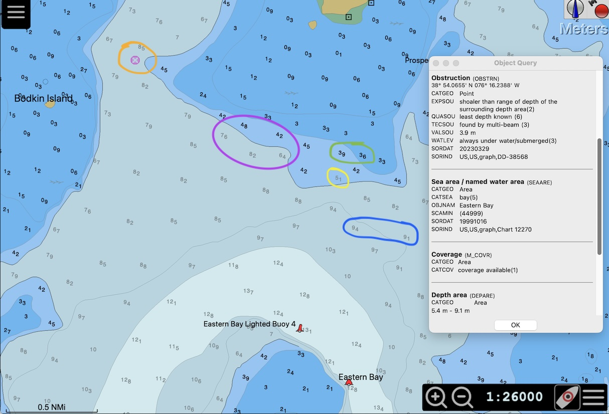
In this example shallow depth is defined as 2m, safety depth as 5m and deep depth as 10m. Isolated obstructions in the safe water area with a depth less than safety water depth will be marked by a magenta cross (See orange circle and Object query of this particular obstruction).
Note of caution
It is to the user to decide what is considered safe, shallow or deep. This may depend on the vessel used, on sea state, on the time of tide, on the area and other facts. What is normally considered safe, could be too shallow if large waves are present. What is considered shallow at low tide, maybe safe at high tide. 25m depth may be considered deep water usually, except if it is the top of an underwater mountain, then it may even be hazardous under most conditions. If you consider this an constructed example, you may want to check out Gorringe Ridge between Madeira and the European mainland.
Technical Note
OpenCPN can only display contour lines that are built in in a chart. If the safety depth is between two built in contours, the deeper one will be used. Which contours are built in depends on the source of the map and on the units used for creating this map. (NOAA maps use fathoms for instance, many European maps will use metric, as does OpenCPN internally). Which contour lines are implemented in a particular chart, can be seen by checking the Depth Area in Object query. In the above example the obstruction is located in the area between the 5.4m and 9.1m contour line
The above example was created using a NOAA chart, which has contour lines at the following depths; 1fm, 2fm, 3fm, 5fm, 6fm, 10fm. This translates to the following metric values: 1.8m, 3.6m, 5.4m, 9.1m, 11.0m, 18.3m. This can be seen when looking at the depth soundings in detail. E.g. when looking at the blue circle, there seems to be a contour line between the 9.1m and 9.4m sounding: the 5fm line at 9.1m. The safety depth is defined as 5m in this example, the next deeper contour line is the 3fm (5.4m) line. The 5.1m sounding (yellow circle) is printed in grey, since it is deeper than the safety depth, but is located within the safety contour line since this uses the 5.4m contour line.
Most of the time, these subtleties will not become aware to the user and will most likely be irrelevant for practical navigation.
User Standard Objects

User Standard Objects are not selectable unless Chart Panel > Hamburger > Display Category is set to User STANDARD. If Display Category is set to BASIC, STANDARD or ALL then User STANDARD Objects are fixed and not selectable.
-
User Standard should generally be set to Reset to STANDARD or Select ALL unless there is a very good reason for changes.
-
Changes should only be made with the Captain or Navigator’s agreement.
-
User Standard and User Standard Objects not normally changed, and are purposely somewhat remote and distinct from the lower right Chart Panel Hamburger, because chart characteristics should not be indiscriminately changed as it may result in dangerous chart settings, and will confuse watches that follow.
Vector Chart Hot Keys
The Hot Keys or keyboard_shortcuts below all work in "ALL" and "Users standard". The hotkeys also work in the other display categories, as long as the feature exists in the category. In "Base" for example, "S" works, but "L" does not. Features are toggled on-off with the keys.
Note: Hot Keys can be different for OS’s. See keyboard_shortcuts
-
T Texts. The visible text is still affected by the settings in the Vector Charts settings tab.
-
L Lights. Lighthouses as well as buoys etc are all affected.
-
S Soundings.
-
A Anchoring. This will affect information needed when anchoring. Anchor berth and Anchorage areas. Submarine cables and pipelines. Type of bottom. Mariners Standard -Anchor berth and Anchorage area display categories.
-
O Chart Outlines.
-
Watch the active GIF image below as it changes using hot keys.
Additional Notes
Vector Palettes
It’s possible to change the whole look of a vector chart. One example
below….
Detailed information is available in
Advanced User
Manual - Vector Palette
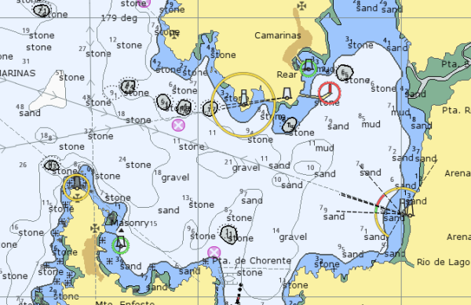
Practical Use
A general recommendation would be to use the "All" display category or
"Users Standard (Mariners Standard)" with "Select All" marked , and
then switch ofF certain features as required. As an example let’s look
at passing through the British gas fields in the SW North Sea
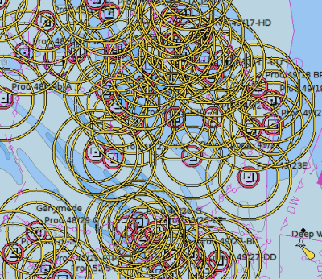
This is not easy, so we want to get rid of all those red and yellow
circles.
Double click on one of the platforms, square with a dot.
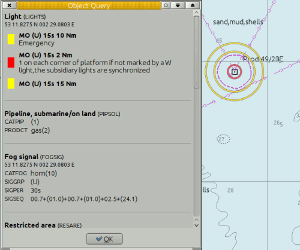
At the top it reads "Light (Lights)", which means that you clicked
on a light, which belongs to the Feature Class "Lights". Find "Light" in
the Mariners Standard list of available filters, and uncheck it.
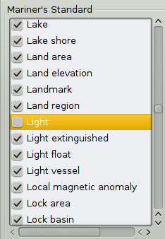
Press the "Apply" button
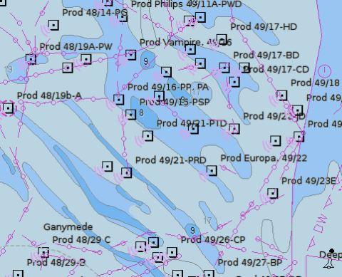
Much better In this particular case, there is a shortcut, use the Hot
Key "L" to toggle all lights on/off.
CM93 Detail Level
The CM93 charts slider control that allows the user to adjust the screen
complexity to suit the actual situation as well as the available
processor capability.
Normal settings depend on a combination of personal preferences and
present usage of map. To see more details, the "CM93 Detail Level"
slider, can be set to a higher positive number or for navigation in
shipping lanes to a negative numbers. Typical zoom level 5 is good for
fishing when as much details are possible is of interest. Zoom level of
+1, zero or -1 is usually fine for normal use.
Positive values give more detail, but at a cost:
-
It simply takes longer to render larger scale charts covering more screen real estate.
-
There will be more instances of gray (NODATA) areas surrounding the larger scale charts as you zoom out, unless quilting is activated.
-
It can become dramatically slower if high detail is specified, and chart outlines are requested. In this case, the program has to read a lot more cells to get their outlines.
-
Conversely, negative values give less detail. Zooms are faster.
-
The slider can also be activated through the "d" hotkey, and displayed directly on the screen.